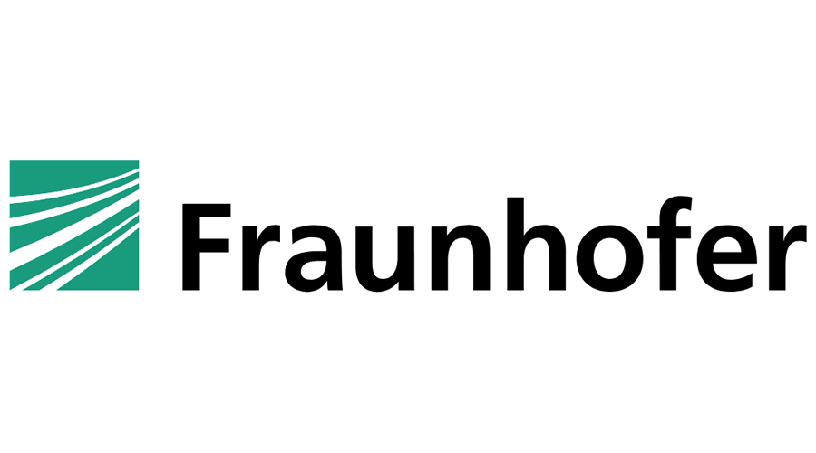
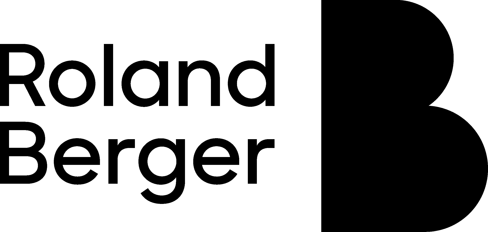
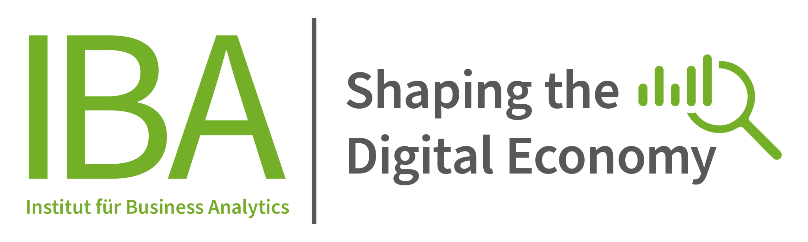
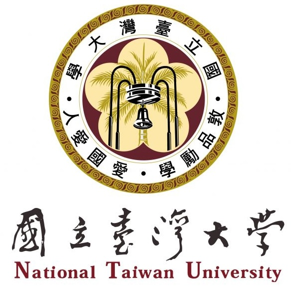

Fraunhofer Institute for Manufacturing Engineering and Automation IPA, Stuttgart, Germany
Jul 2023 - Sep 2023
BlackRock, Budapest, Hungary
Jun 2022 - Aug 2022

Roland Berger, Munich, Germany
Mar 2022 - Jun 2022
KPMG, Munich, Germany
Oct 2021 - Dec 2021
Institute for Complex Quantum Systems, Ulm University, Germany
Oct 2020 - Jul 2021

Institute for Business Analytics, Ulm University, Germany
Apr 2020 - Jul 2021
Jiao Tong University, Shanghai, People's Republic of China (PRC)
Sep 2024 - Jan 2025 (discontinued in Dec 2024)
National University of Singapore
Oct 2023 - Sep 2024

National Taiwan University, Taipei, Republic of China (ROC)
Sep 2022 - Jun 2023
Ulm University, Germany
Apr 2021 - Sep 2024
Ulm University, Germany
Oct 2017 - Mar 2021
Passionate about cooking, swimming, tennis, traveling, wine/gin tasting and history, language learning, Chinese culture, ...
Entrepreneurship at the German Entrepreneurship Prize for Students (DGPS) Alumni Organization and organizer at Singapore Quantum Tech Meetup group